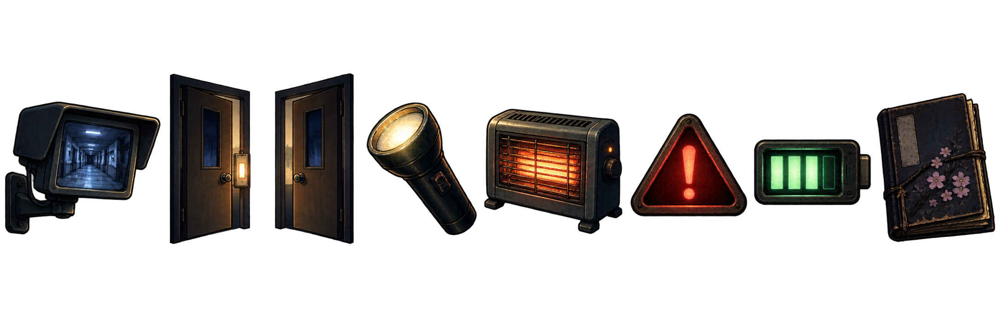

야간 관리실 · B1
서쪽 복도
동쪽 복도
학교 야간 감시 단말기카메라를 열어 교실과 복도의 이상을 확인하세요.
근무수칙은 열어 둔 동안 시간이 멈춥니다.
근무수칙은 열어 둔 동안 시간이 멈춥니다.
CAM 01한국관
할로윈 행사가 끝난 학교. 모두 하교한 뒤 빈 교실과 복도에서 이상 현상이 시작됐습니다. 야간 경비실의 CCTV와 문·조명 장치를 이용해 자정부터 오전 6시까지 버티세요.
